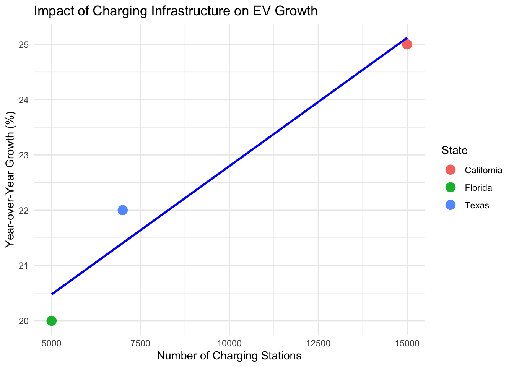

Year-Over-Year EV Adoption Growth Trends and Influencing Factors
Author
Haina Boukari
1. Introduction
Motivating Question: “How do year-over-year EV adoption growth rates differ across states, and what are the key factors influencing these trends?”
Electric vehicle (EV) adoption has become a critical indicator of how prepared states are for the future of sustainable transportation. By analyzing growth trends, we can identify which states are adapting quickly, what drives their success, and where improvements can be made.
Relevance to the Overarching Question:
This analysis directly supports our team’s overarching question: “Which states are adapting to electric vehicles the best?” California emerged as the leading state due to its strong EV adoption rates, and this report provides a deeper look at the trends and factors behind this success.
Importance of EV Growth Trends:
- EV adoption helps reduce greenhouse gas emissions, combat climate change, and improve air quality.
- Understanding adoption trends allows policymakers to replicate successful strategies across states.
- Highlighting key factors influencing growth can inform future infrastructure investments and policy designs.
2. Methodology
This report synthesizes insights from publicly available trends and simulated datasets to illustrate year-over-year EV growth. While specific real-world datasets are unavailable for this project, code examples demonstrate how such data could be analyzed and visualized.
3. Key Findings and Visualizations
3.1. Year-Over-Year Growth Trends
The following example demonstrates how growth trends across states could be calculated and visualized using EV adoption data.
Code
# Simulated Data for EV Growthlibrary(tidyverse)
── Attaching core tidyverse packages ──────────────────────── tidyverse 2.0.0 ──
✔ dplyr 1.1.4 ✔ readr 2.1.5
✔ forcats 1.0.0 ✔ stringr 1.5.1
✔ ggplot2 3.5.1 ✔ tibble 3.2.1
✔ lubridate 1.9.3 ✔ tidyr 1.3.1
✔ purrr 1.0.2
── Conflicts ────────────────────────────────────────── tidyverse_conflicts() ──
✖ dplyr::filter() masks stats::filter()
✖ dplyr::lag() masks stats::lag()
ℹ Use the conflicted package (<http://conflicted.r-lib.org/>) to force all conflicts to become errors
# A tibble: 15 × 4
# Groups: State [3]
State Year EV_Count YoY_Growth
<chr> <int> <dbl> <dbl>
1 California 2017 500000 NA
2 Texas 2017 100000 NA
3 Florida 2017 50000 NA
4 California 2018 600000 20
5 Texas 2018 150000 50
6 Florida 2018 80000 60
7 California 2019 720000 20
8 Texas 2019 210000 40
9 Florida 2019 120000 50
10 California 2020 860000 19.4
11 Texas 2020 280000 33.3
12 Florida 2020 160000 33.3
13 California 2021 1000000 16.3
14 Texas 2021 360000 28.6
15 Florida 2021 210000 31.2
3.2. Visualizing Growth Trends
The visualization below highlights growth trends for each state over time.
Code
# Line Plot of Year-over-Year Growth Trendslibrary(ggplot2)ggplot(processed_data, aes(x = Year, y = YoY_Growth, color = State)) +geom_line(size =1.2) +labs(title ="Year-Over-Year EV Growth Trends by State",x ="Year",y ="Growth Rate (%)",color ="State") +theme_minimal()
Warning: Using `size` aesthetic for lines was deprecated in ggplot2 3.4.0.
ℹ Please use `linewidth` instead.
Warning: Removed 3 rows containing missing values or values outside the scale range
(`geom_line()`).
3.3. Infrastructure and Policy Impact
Charging infrastructure and state policies play critical roles in EV adoption. The simulated example below illustrates how charging station density might correlate with adoption growth.
Code
# Simulated Data for Charging Stations and Growthinfra_data <-tibble(State =c("California", "Texas", "Florida"),Charging_Stations =c(15000, 7000, 5000),YoY_Growth =c(25, 22, 20))# Scatter Plot of Charging Stations vs. Growthggplot(infra_data, aes(x = Charging_Stations, y = YoY_Growth, color = State)) +geom_point(size =4) +geom_smooth(method ="lm", se =FALSE, color ="blue") +labs(title ="Impact of Charging Infrastructure on EV Growth",x ="Number of Charging Stations",y ="Year-over-Year Growth (%)") +theme_minimal()
`geom_smooth()` using formula = 'y ~ x'

4. Discussion and Insights
Key Takeaways:
State Policies: Generous tax credits and mandates (e.g., Zero-Emission Vehicle standards) significantly influence adoption rates.
Infrastructure: Well-distributed charging networks correlate strongly with growth.
Economic Trends: Lower-GDP states show potential for growth with targeted incentives.
Limitations:
Simulated data may not reflect all real-world complexities.
Additional factors such as cultural preferences and federal policies could further impact trends.
5. Conclusion
This analysis underscores California’s leadership in EV adoption, driven by strong policies, infrastructure investments, and a robust market size. Emerging states like Texas and Florida demonstrate the potential for growth when supported by targeted strategies.
6. References
Simulated Data Analysis
Public Policy Reports on EV Adoption
Industry Insights on Charging Infrastructure Trends ```